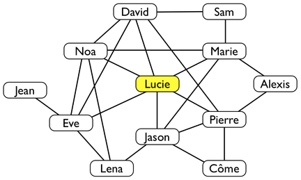
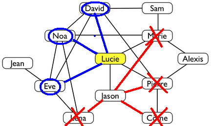

Lucie et ses amis font partie du réseau social CastorBook. Voici les amis de Lucie, ainsi que les amis de ses amis dans ce réseau.

Une ligne représente un lien d'amitié entre deux personnes. Par exemple, Marie est l'amie de Lucie, Alexis n'est pas l'ami de Lucie, Alexis est l'ami de Marie.
Quelqu'un peut partager une photo avec certains de ses amis. Les amis, avec qui la photo est partagée, peuvent voir et commenter la photo. Si quelqu'un commente une photo alors tous ses propres amis peuvent, à leur tour, voir le commentaire et la photo. Par contre, ils ne peuvent pas commenter la photo (sauf si son propriétaire avait choisi de partager la photo avec eux initialement).
Lucie a ajouté une nouvelle photo sur son profil castorbook. Elle ne veut pas que Jason puisse la voir. Avec qui peut-elle partager sa photo, sans que Jason puisse la voir ? Cochez leurs prénoms ci-dessous.
Pour que Jason ne puisse pas voir la photo de Lucie, il ne faut pas qu'elle la partage avec les amis de Jason, car sinon ils risquent de commenter la photo, ce qui permettrait à leurs propres amis, donc à Jason, de la voir. Lucie peut donc partager la photo avec tous ceux de ses amis qui ne sont pas des amis de Jason.
Dans l'illustration ci-dessous, nous avons rayé les amis de Jason. Nous avons ensuite entouré les amis de Lucie qui ne sont pas parmi les amis de Jason.

Les amis avec lesquels Lucie peut partager ses photos sont : Eve, Noa et David.
Cet exercice consiste essentiellement à comprendre la signification de la représentation graphique d'un objet essentiel en informatique : le graphe. Les personnes du réseau social sont les noeuds du graphe, et les liens d'amitié entre personnes sont les arêtes du graphe. La notion de noeuds voisins d'un noeud est ici manipulée, de même que la notion de noeuds à une distance de 2 d'un autre noeud (accessibles en traversant deux arcs).
Les graphes donnent une représentation abstraite des relations entre objets de toutes sortes. Ils sont utiles, par exemple pour modéliser des réseaux d'amis ou de télécommunications. La transition entre un objet réel et un modèle n'est pas toujours facile. Le modèle abstrait peut permettre de voir des structures cachées.